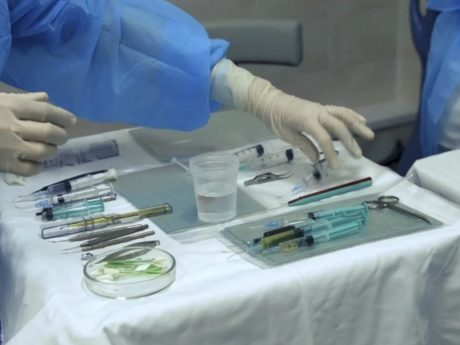

What would happen if the United States legalized the sale of human organs? Economists will note the seductive market logic: with regulation, proponents of legalization suggest the organ shortage will disappear, the market will arrive at a fair price for human tissue and new laws will regulate away criminal elements.
For argument’s sake, let’s assume that the U.S. would be able to create its own equitable system. What would happen in the rest of the world? Whether we like it or not, we live in the era of globalization, and if the U.S. legalizes the market for body parts, there is no reason to think that international economies won’t play a role in how a patient decides to procure transplant organs.
According to the National Foundation for Transplants, a kidney transplant costs about $260,000. In the illegal organ markets in India, Egypt and Pakistan, the same procedure rings in at just shy of $20,000 — certified organ included.
Immunosuppressant drugs have come so far that a broker can arrange a transplant in as little as 30 days. The only thing stopping the typical American transplant patient from going abroad and buying an organ is the difficulty of making contact with a broker and the threat of what might happen if they get caught.
In the real world, kidneys don’t have a fixed price. Instead, the market for human body parts is a lot like the one for used cars: They’re only worth what someone is willing to sell them for. In the age of cheap international travel, where state-of-the-art hospitals abut the most impoverished slums on earth, hundreds of thousands of people are available and willing to sell their flesh for pennies on the dollar. Some of these areas are so well known among organ traffickers and brokers that they’ve earned the name “kidneyvilles” for their plentiful supply of willing “donors.”
Between 2006 and 2010, I made India my home while researching the global trade in human body parts. India is notable in the organ trafficking world because of its advanced hospitals and plentiful supply of extreme poverty. In 2004, after a tsunami ripped across South Asia and slammed into the eastern coast of the country, hundreds of thousands of people wound up in refugee camps. These desperately poor people had few options for work or making a livelihood, a perfect opportunity for organ brokers. It was a buyer’s market, and everyone sold.
Typically, the brokers promised $2,000 per organ, but only delivered the advance, always finding one excuse or another not to pay the rest of the money. Even so, husbands sold their kidneys and then pressured their wives to sell theirs. The price for a kidney fell to as low as $600.
When I visited one camp called Ernavoor outside the bustling metropolis of Chennai, I met 80 women with foot long scars across their abdomens. These were not the equitable arrangements that proponents of organ markets advocate for. This was a symptom of extreme poverty. Of course, none of the people in that camp could ever expect to receive an organ should one of their own fail. The one rule with organ markets is that human tissue always moves up — and never down — the social hierarchy.
Still, that was an illegal market. What would happen if the trade were well regulated abroad? To answer this, it’s helpful to review what happened in the market for human surrogate babies. In the U.S., it is legal to pay a woman to carry a child, so long as the money is called “compensation” and not coercion. Even so, an American surrogate might cost as much as $100,000 in such arrangements.
Once the market was clearly defined in America, other countries, with looser definitions of human rights, fought for their share of the market. In 2002, India became the go-to destination for procuring a budget surrogate womb. To the surprise of no one, the Indian industry soon began to cut corners. Women were housed under lock and key in houses known to the press as “baby factories.” Because U.S. patient demanded to know the condition of their child during the entire course of the pregnancy, surrogates became virtual slaves under the doctor’s perpetual surveillance.
The factories multiplied and soon tens of thousands of international customers reasoned that if it was legal to hire a surrogate at home, why not save money abroad? In some cases, when a pregnancy didn’t go as planned and the doctor had to choose between the life of an unborn surrogate baby and the life of mother, the mother did not always survive. Late last year, India finally outlawed surrogacy tourism after non-stop incidents and official inquiries into the surrogates’ wellbeing. Now the commercial surrogacy boomseems to be moving to Cambodia where regulations are still loose.
Still, the rise of surrogacy scandals is a warning about what might happen if we legalize organ sales in America. Even if the trade appears to work at home, there is no way to ensure that American customers won’t look for better deals abroad. We cannot solve our own organ shortage by exploiting the poor and helpless people on the other side of the world.
Explore these other perspectives from the Washington Post’s In Theory blog which, this week was talking about government compensation for organ donors.
Sally Satel: Generosity won’t fix our shortage of organs for transplants
Francis Delmonico and Alexander Capron: Our body parts shouldn’t be for sale
Scott Sumner: The moral case for paying kidney donors
Benjamin Humphreys: Will lab-grown kidneys fix our transplant waiting lists?
Josh Morrison: It’s time to treat organ donors with the respect they deserve